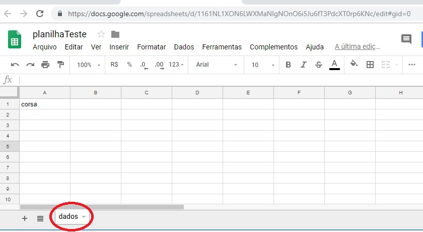
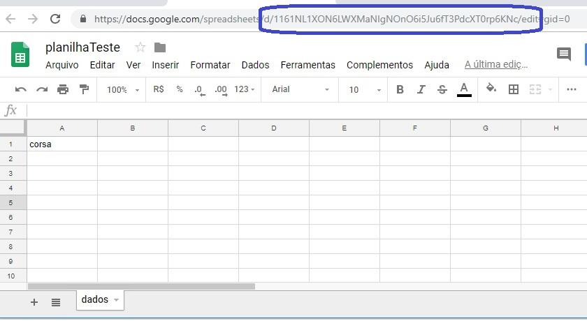

Carlos Adriano
RECEBENDO DADOS E ARMAZENANDO NA PLANILHA GOOGLE
21 de Janeiro de 2019
Com a linguagem Apps Script é possível utilizar as planilhas Google como um banco de dados online para o seu aplicativo mobile, para o seu site ou para qualquer aplicação que você esteja desenvolvendo ou pense em desenvolver e que precise de um banco de dados disponível o tempo todo para ser acessado pelos seus usuários. Neste post, será mostrado como receber dados e guardá-los na nuvem.
Os dados são enviados para o web app no formato json(javascript object notation) usando uma requisição http com o método POST. O web app processa essa requisição dentro da função doPost(e). O e entre parênteses armazena o dado recebido que você quer guardar na planilha Google. Esse valor é retornado para a função receberDados. O código está bem comentado de forma que é possível entendê-lo com facilidade.
O web app começa transformando o dado no formato json em um objeto javascript, extrai a chave e o valor do json e armazena nas variáveis chave e valor, respectivamente. As variáveis x e y representam a linha e a coluna e ambas começam com 1 para iniciar na primeira célula. A rotina do...while verifica se a primeira célula da planilha está vazia, se estiver, o dado é colocado nesta célula, se não estiver, a próxima célula da coluna é verificada até que uma célula vazia seja encontrada.
Para que o web app funcione corretamente, primeiro abra o Google Drive e crie uma nova planilha. Dê um nome para ela, por exemplo, "planilhaTeste" e mude o nome para dados no local mostrado em vermelho na figura.
Para inserir os dados na planilha que você criou, é preciso usar o id dela. O id da planilha está marcado em azul na figura e fica localizado entre d/ e /edit. Na planilha da figura, o id é 1161NL1XON6LWXMaNIgNOnO6i5Ju6fT3PdcXT0rp6KNc.
Crie um projeto no Google Apps Script e cole o código abaixo. Para ver como criar um projeto, veja este post.
function doPost(e){ return receberDados(e); } function receberDados(request) { var output = ContentService.createTextOutput(); var objetoJS = JSON.parse(request.postData.contents);//transforma json em objeto javascript for(var >k in objetoJS)>k in objetoJS)//percorre o objeto e extrai a chave var chave = k; for(vark in objetoJS)//percorre o objeto e extrai o valor var valor = objetoJS[k]; var id = "1161NL1XON6LWXMaNIgNOnO6i5Ju6fT3PdcXT0rp6KNc";//esse tem que ser o id da sua planilha //abre a planilha Google prlo seu id var ss = SpreadsheetApp.openById(id); var sheet = ss.getSheetByName("dados"); var x = 1;//linha da planilha var y = 1;//coluna da planilha var celula_vazia = ""; //esta rotina verifica se a celula esta vazia, //quando encontra uma celula vazia ela adiciona o valor recebido do{ if(celula_vazia === sheet.getRange(x, y).getValue()) { sheet.getRange(y, x).setValue(valor); break; } x++; }while(1); output.setMimeType(ContentService.MimeType.JSON); return output; }
Depois que o seu web app estiver publicado, envie dados no formato json usando o endereço do web app e, se tudo tiver dado certo, os dados ficarão armazenados online na planilha que você criou. Recomendo, começar enviando somente um dado no formato json, como no exemplo a seguir. Para saber como enviar dados no formato json usando um aplicativo, veja este post.
{
"carro":"corsa"
}

Carlos Adriano
Estudante de Engenharia Elétrica e programador.